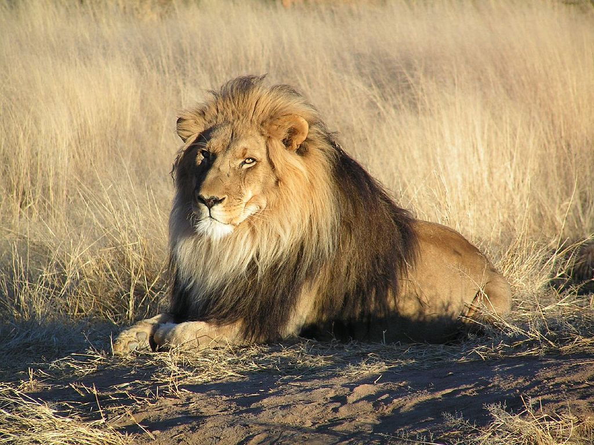
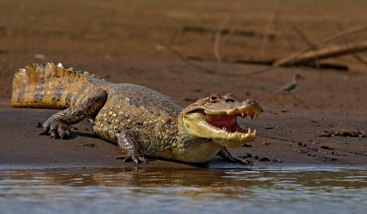

Mammals

Information
Moose
X
Mammals
Moose
Scientific name:A mature male moose is called a bull, a mature female a cow, and an immature moose of either sex a calf.
Habitat:Moose require habitat with adequate edible plants (e.g., pond grasses, young trees and shrubs), cover from predators, and protection from extremely hot or cold weather. Moose travel among different habitats with the seasons to address these requirements. Moose avoid areas with little or no snow as this increases the risk of predation by wolves and avoid areas with deep snow, as this impairs mobility.
Decline in population: Since the 1990s, moose populations have declined dramatically in much of temperate North America, although they remain stable in arctic and subarctic regions.The moose population in New Hampshire fell from 7,500 in the early 2000s to a current estimate of 4,000 and in Vermont the numbers were down to 2,200 from a high of 5,000 animals in 2005. Much of the decline has been attributed to the winter tick with about 70% of the moose calf deaths across Maine and New Hampshire due to the parasite.
Size and weight:On average, an adult moose stands 1.4–2.1 m (4.6–6.9 ft) high at the shoulder, which is more than a foot higher than the next largest deer on average, the wapiti. Males (or "bulls") normally weigh from 380 to 700 kg (838 to 1,543 lb) and females (or "cows") typically weigh 200 to 490 kg (441 to 1,080 lb), depending on racial or clinal as well as individual age or nutritional variations.
Dewlap:Both male and female moose have a dewlap or bell, which is a fold of skin under the chin. Its exact use is unknown, but theories state that it might be used in mating, as a visual and olfactory signal, or as a dominance signal by males, as are the antlers
Fur:Their fur consist of two layers; top layer of long guard hairs and a soft wooly undercoat. The guard hairs are hollow and filled with air for better insulation, which also helps them stay afloat when swimming.

Information
Lion
X
Mammals
Lion
Scientific name:Felis leo was the scientific name used by Carl Linnaeus in 1758, who described the lion in his work Systema Naturae. The genus name Panthera was coined by German naturalist Lorenz Oken in 1816
Subspecies:In the 19th and 20th centuries, several lion type specimens were described and proposed as subspecies, with about a dozen recognised as valid taxa until 2017. Lion samples from some parts of the Ethiopian Highlands cluster genetically with those from Cameroon and Chad, while lions from other areas of Ethiopia cluster with samples from East Africa.
Evolution:The lion's closest relatives are the other species of the genus Panthera, namely tiger, snow leopard, jaguar, and leopard. Results of phylogenetic studies published in 2006 and 2009 indicate that the jaguar and the lion belong to one sister group that diverged about 2.06 million years ago. The modern lion was probably widely distributed in Africa during the Middle Pleistocene and started to diverge in sub-Saharan Africa during the Late Pleistocene. Lion populations in East and Southern Africa became separated from populations in West and North Africa when the equatorial rainforest expanded 183,500–81,800 years ago.
Hybrids:In zoos, lions have been bred with tigers to create hybrids for the curiosity of visitors or for scientific purpose. The liger is bigger than a lion and a tiger, whereas most tigons are relatively small compared to their parents because of reciprocal gene effects.
Distribution and habitat:African lions live in scattered populations across Sub-Saharan Africa.The lion prefers grassy plains and savannahs, scrub bordering rivers and open woodlands with bushes. It is absent from rainforest and rarely enters closed forest. On Mount Elgon, the lion has been recorded up to an elevation of 3,600 m (11,800 ft) and close to the snow line on Mount Kenya. Lions occur in savannah grasslands with scattered acacia trees, which serve as shade. The Asiatic lion now only survives in and around Gir National Park in Gujarat, western India. Its habitat is a mixture of dry savannah forest and very dry, deciduous scrub forest.

Information
Wolf
X
Mammals
Wolf
Population :The global wolf population is estimated to be 300,000. The wolf is one of the world's best-known and most-researched animals, with probably more books written about it than any other wild species
Profile:The wolf (Canis lupus), also known as the gray/grey wolf, is a canine native to the wilderness and remote areas of Eurasia and North America. It is the largest extant member of its family, with males averaging 40 kg (88 lb) and females 35.5–37.7 kg (78–83 lb). It is distinguished from other Canis species by its larger size and less pointed features, particularly on the ears and muzzle.
Evolution:The earliest fossils of Canis lupus were found in what was once eastern Beringia at Old Crow, Yukon, Canada and at Cripple Creek Sump, Fairbanks, Alaska. The age is not agreed upon but could date 1 million YBP.
Distribution and habitat:Originally, wolves occurred across Eurasia above the 12th parallel north and across North America above the 15th parallel north. However, deliberate human persecution has reduced the wolf's range to about one-third of what it once was because of livestock predation and fear of attacks on humans.
Dentition and bite force:The wolf's head is large and heavy, with a wide forehead, strong jaws and a long, blunt muzzle. The skull averages 230–280 mm (9.1–11.0 in) in length and 130–150 mm (5.1–5.9 in) in width
Information
Bear
X
Mammals
Bear
Bears are carnivoran mammals of the family Ursidae. They are classified as caniforms, or doglike carnivorans. Although only eight species of bears are extant, they are widespread, appearing in a wide variety of habitats throughout the Northern Hemisphere and partially in the Southern Hemisphere
Evolution:The earliest members of Ursidae belong to the extinct subfamily Amphicynodontinae, including Parictis (late Eocene to early middle Miocene, 38–18 Mya) and the slightly younger Allocyon (early Oligocene, 34–30 Mya), both from North America.
Size:The bear family includes the most massive extant terrestrial members of the order Carnivora.The polar bear is considered to be the largest extant species,with adult males weighing 350–700 kg (772–1,543 lb) and measuring 2.4–3 metres (7 ft 10 in–9 ft 10 in) in total length.
Morphology:Bears are generally bulky and robust animals with short tails. They are sexually dimorphic with regard to size, with males typically being larger.Larger species tend to show increased levels of sexual dimorphism in comparison to smaller species.
Distribution and habitat:Extant bears are found in sixty countries primarily in the Northern Hemisphere and are concentrated in Asia, North America, and Europe. An exception is the spectacled bear; native to South America, it inhabits the Andean region. The most widespread species is the brown bear, which occurs from Western Europe eastwards through Asia to the western areas of North America.
Feeding:Giant panda feeding on bamboo at Smithsonian National Zoological Park, Washington, D. C. This species is almost entirely herbivorous.
Information
Alephant
X
Mammals
Alephant
Scientific name:The word "elephant" is based on the Latin elephas (genitive elephantis) ("elephant"), which is the Latinised form of the Greek
Size:Elephants are the largest living terrestrial animals. African bush elephants are the largest species, with males being 304–336 cm (10 ft 0 in–11 ft 0 in) tall at the shoulder with a body mass of 5.2–6.9 t (5.7–7.6 short tons) and females standing 247–273 cm (8 ft 1 in–8 ft 11 in) tall at the shoulder with a body mass of 2.6–3.5 t (2.9–3.9 short tons).
Ecology and activities:Asian elephants prefer areas with a mix of grasses, low woody plants, and trees, primarily inhabiting dry thorn-scrub forests in southern India and Sri Lanka and evergreen forests in Malaya. Because of their large size, elephants have a huge impact on their environments and are considered keystone species. Their habit of uprooting trees and undergrowth can transform savannah into grasslands; when they dig for water during drought, they create waterholes that can be used by other animals.
Communication:Touching is an important form of communication among elephants. Individuals greet each other by stroking or wrapping their trunks; the latter also occurs during mild competition. Older elephants use trunk-slaps, kicks, and shoves to discipline younger ones. Individuals of any age and sex will touch each other's mouths, temporal glands, and genitals, particularly during meetings or when excited. This allows individuals to pick up chemical cues.
Habitat destruction:African elephants are listed as vulnerable and Asian elephants as endangered by the International Union for Conservation of Nature (IUCN). One of the biggest threats to elephant populations is the ivory trade, as the animals are poached for their ivory tusks. Other threats to wild elephants include habitat destruction and conflicts with local people. Elephants are used as working animals in Asia.

Information
Gorilla
X
Mammals
Gorilla
Gorilla Facts: Gorillas are the world's largest primates. Both species of the gorilla, the eastern and western gorilla, are critically endangered. The DNA of gorillas has a 95-99% match to that of humans.
Physical Description:Average wild males weigh between 300 and 430 pounds while females weigh half as much. Adult males have a height ranging from 4 feet 11 inches to 5 feet 11 inches and arm span between 7 feet 7 inches and 8 feet 6 inches. Females are smaller in all aspects. In captivity, gorillas are capable of growing to even bigger sizes. The eastern gorilla is darker than the western gorilla, but the mountain gorilla is the darkest and has the thickest fur.
Behavior:Gorillas are highly sociable animals that live in groups of 5 to 30 gorillas with an adult male or silverback as the leader. A silverback is an old gorilla above 12 years old. At that age, they develop a patch of silver on the back. The leader makes all the decisions such as conflict mediation and determining movement, among other decisions. Younger males, also called blackbacks, serve as additional protection. Bonds exist between males and females for a mutually beneficial relationship of mating and protection. Male to male bonds are weaker.
Habitat and Range:The range of both species of gorillas is divided by the Congo River and the tributary rivers. The western gorilla lives in West Africa while in eastern and central Africa the eastern gorilla resides. The population is distributed among plenty of habitats. Gorillas’ habitats are diverse and range from swamps to montane forests with heights ranging from 2,130 feet and 13,120 feet above the sea level for the case of eastern mountain gorillas. The habitats for the eastern lowland gorillas may be montane bamboo forests or lowland forests with heights between 1,969 and 10,853 feet..
Reproduction:Females mature when they are around 10 years old while males mature at around 11 years. The infants are dependent on the mother until they are around six years where they are weaned and the mother and the infant sleep in different places. The mother then begins to ovulate again. The males play no active role in the upbringing.
Information
Giraffe
X
Mammals
Giraffe
Giraffe Facts:The giraffe is the world’s tallest land mammal. It’s most distinctive for its long legs and neck. Giraffes possess a brown mane, and a triangular shaped head topped with two hairy horns.
Gestation:453-464 days
Height and Weight:15-17 ft & 1,765-4,255 lbs (Male) ; 12-15ft & 1,215-2600lbs (Female)
Habit:Loosely Bound Groups
Behavior:A giraffe is a non-territorial and very socially-oriented animal. The female adults bond in groups of 10 to 12 without a male, not counting their suckling young, and male giraffes stay in their herds. When happy, giraffes will engage in playful tussles engaged with their necks, or gallop about open spaces. When one male wants to establish its dominance over others within a herd, it engages in aggressive "necking" behavior.
Information
Hippopotamus
X
Mammals
Hippopotamus
Physical Description:The Common Hippopotamus (Hippopotamus amphibious), a Greek-derived name that can be translated to mean “river horse”, is the third-largest terrestrial mammal, following only the white rhinoceros and the elephant.
Profile:Biological taxonomists believe that they are closely related to whales, dolphins, and pigs. Hippos measure 12 to 15 feet in length, are 5 feet tall at the shoulder, and often weigh as much as 3.5 tons.
Habitat and Range:Hippopotamuses live in slow-moving rivers and lakes surrounded by grasslands. One can find them in the Southern and Central Africa, near the Nile River, and south of the Sahara Desert. The common hippopotamuses are not classified as endangered species, but instead a “vulnerable” one, with approximately 125,000 to 148,000 of them remaining in the world.
Behavior:Hippos spend most of the hours during the day immersed in slow-moving waters in order to cope with the hot conditions of the African savanna. They live in groups, called “bloats”, of about 15 to 30 individuals, with the strongest male (or “bull”) dominating each group.
Reproduction:The dominant male in each bloat is the only one responsible for mating with the females. In case one of the other males tries to mate with one of the females, the dominant bull will scare the intruder by producing a loud bellowing noise and opening its jaws wide.
Information
Platypus
X
Mammals
Platypus
Facts:Platypus is a semiaquatic mammal that lay eggs. The common residence for this animal include the lakes and streams of eastern Australia. They can also be found in Tasmania. They are the one of the few mammals that reproduce by lay eggs, known as monotremes. Another name for platypus is the duck-billed platypus.
Physical Description:The female platypus is smaller than the male platypus; the males can measure up to 60 cm long from the tip of the bill to the tip of the tail. Typically, females are 370 to 550 millimeters, and males are 400 to 630 millimeters long. The weight for females ranges from 600 to 1,700 grams, while the males weigh about 800 to 3,000 grams.
Behavior:Platypuses navigate with the tails and hind feet and swim with the front feet. Platypuses can move swim very well in the water as compared to when they are moving across the land.
Habitat and Range:These animals are found only in a small part of the world. Freshwater areas that run into and out the eastern and southern coast of Australia and island of Tasmania are homes to the platypuses.
Reproduction:The female platypus excavates down inside the ground on the waterside and covers herself into one of her tunnel rooms when it is time to breed.
Diet:Platypuses are carnivorous; their food include insects and shellfish in water. Their sensitized bills help them discover food in the muddy bottom of the water as they swim.
Information
Rhinoceros
X
Mammals
Rhinoceros
Facts:Animals Of Asia. Unlike other rhinos, this vulnerable species only has one horn.
Physical Description:The Indian rhinoceros, unlike other rhino species, has only one horn, hence its scientific name Rhinoceros unicornis, which means "horned nose and one-horned". Its grey-brown hide has folds on the neck, shoulder, and rump.
Habitat and Range:Small parts of India and Nepal are where populations of the Indian rhinocerous are to be found today, though in the past they were also seen living in Bhutan, Pakistan, and Bangladesh. These countries have tropical and subtropical grasslands, savannas, shrublands, forests, and swamps, of all which may be inhabited by Indian rhino.
Behavior:The Indian rhinoceros is a solitary animal, except for when mating or when females are caring for their calves. Still, there are amorphous clusters formed near watering spots, such as swamps, and in their feeding ranges. The Indian rhinoceros loves to swim, and will wallow in mud and water to keep insects from biting its sensitive skin, as well as to lessen the irritation when it is bitten.
Reproduction:A male Indian rhinocerous reaches sexual maturity between 9 and 10 years of age, while a female becomes ready to mate at 4 to 7 years of age. Breeding for Indian rhinos occurs all year round. For a male Indian rhinocerous to mate with a female, it battles other males with its tusk-like incisors, until one has totally dominated the other to claim victory.
Diet:The Indian rhinocerous is herbivorous, and primarily a grazer. It grazes in the early morning or in the evening, and its diet is largely made up by grasses, such as Saccharum, though it also eats leaves, branches, cultivated crops, shrubs, fruits and aquatic plants, according to WWF.
Information
Porcupine
X
Mammals
Porcupine
Porcuppine Facts:Porcupines belong in the order Rodentia and are easily identifiable by their quill-covered bodies. The small mammals are grouped into two families, Erethizontidae (new world porcupines) and Hystricidae (old world porcupines).
Physical Description:The size and appearance of new and old world porcupines varies significantly. New world porcupines are stout, small, and have relatively shorter quills on the back which are interspersed with long soft hairs. They have a body length of about 12 inches with some larger porcupines reaching 34 inches
Habitat and Range:Old world porcupines are found in southern Europe, most parts of Africa, and western and southern Asia. New world porcupines are found in South and North America, particularly in wooded and forested areas. Porcupines are adapted to a variety of habitats including tropical and temperate regions. They can occupy forests, grasslands, deserts, rocky outcrops, and rock crevices.
Behavior:Porcupines are mostly nocturnal and move in either small groups or in solitary. Despite their poor sight, porcupines have a highly developed sense of smell and hearing. They freeze when approached by predators and sometimes show aggressive behavior such as running backwards or sideways towards the attacker to implant their spikes.
Living:They can occupy forests, grasslands, deserts, rocky outcrops, and rock crevices.
Diet:Porcupines feed on leaves, herbs, roots, twigs, bulbs, fruits, barks, seeds, nuts, and grasses.
Information
Camel
X
Mammals
Camel
Camels Facts:Camels are domestic animals that have hoofs founds in Asia and Africa. They often live in desert or semi-desert regions. Nomads keep camels for their milk and meat which they consume to survive.
Biology:The average life expectancy of a camel is 40 to 50 years. A full-grown adult camel stands 1.85 m (6 ft 1 in) at the shoulder and 2.15 m (7 ft 1 in) at the hump. Camels can run at up to 65 km/h (40 mph) in short bursts and sustain speeds of up to 40 km/h (25 mph)
Evolution:The earliest known camel, called Protylopus, lived in North America 40 to 50 million years ago (during the Eocene). It was about the size of a rabbit and lived in the open woodlands of what is now South Dakota
Domestication:Like horses before their extinction in their continent of origin, camels spread across the Bering land bridge, moving in the opposite direction from the Asian immigration to America. They survived in the Old World, and eventually humans domesticated them and spread them globally. Along with many other megafauna in North America, the original wild camels were wiped out during the spread of Native Americans from Asia into North America, 12,000 to 10,000 years ago
Textiles:?Desert tribes and Mongolian nomads use camel hair for tents, yurts, clothing, bedding and accessories. Camels have outer guard hairs and soft inner down, and the fibers are sorted by color and age of the animal. The guard hairs can be felted for use as waterproof coats for the herdsmen, while the softer hair is used for premium goods. The fiber can be spun for use in weaving or made into yarns for hand knitting or crochet.
Distribution :There are around 14 million camels alive as of 2010, with 90% being dromedaries.Dromedaries alive today are domesticated animals (mostly living in the Horn of Africa, the Sahel, Maghreb, Middle East and South Asia). The Horn region alone has the largest concentration of camels in the world.
Reptiles
Information
Rattlesnake
X
Reptiles
Rattlesnake
Rattlesnake Facts:Rattlesnakes are a group of venomous snakes of the genera Crotalus and Sistrurus[1] of the subfamily Crotalinae (the pit vipers). The scientific name Crotalus is derived from the Greek κρόταλον, meaning "castanet". Rattlesnakes receive their name from the rattle located at the end of their tails, which makes a loud rattling noise when vibrated that deters predators or serves as a warning to passers-by.
Range and habitat:Rattlesnakes are native to the Americas, living in diverse habitats from southwestern Canada to central Argentina. The large majority of species lives in the American Southwest and Mexico. Four species may be found east of the Mississippi River, and two in South America. Rattlesnakes are found in almost every type of habitat capable of supporting terrestrial ectothermic vertebrates, but individual species can have extremely specific habitat requirements, only able to live within certain plant associations in a narrow range of altitudes.
Hydration:Rattlesnakes are believed to require at least their own body weight in water annually to remain hydrated. The method in which they drink depends on the water source. In larger bodies of water (streams, ponds, etc.), they submerge their heads and ingest water by opening and closing their jaws, which sucks in water. If drinking dew, or drinking from small puddles, they sip the liquid either by capillary action or by flattening and flooding their lower jaws
Living:Rattlesnakes are predators that live in a wide array of habitats, hunting small animals such as birds and rodents.
Reproduction:Most rattlesnake species mate during the summer or fall, while some species mate only in the spring, or during both the spring and fall.
Conservation status:Rattlesnakes tend to avoid developed areas, preferring undisturbed, natural habitats. Rapid habitat destruction by humans, mass killings during events such as rattlesnake round-ups, and deliberate extermination campaigns all pose threats to rattlesnake populations in many areas. Several species of rattlesnakes, such as the timber rattlesnake, massasauga, and canebrake rattlesnake, are listed as threatened or endangered in many U.S. states.
Information
Lizard
X
Reptiles
Lizard
General:Lizards are a widespread group of squamate reptiles, with over 6,000 species,[1] ranging across all continents except Antarctica, as well as most oceanic island chains.
Largest and smallest:
Type of animal:The adult length of species within the suborder ranges from a few centimeters for chameleons such as Brookesia micra and geckos such as Sphaerodactylus ariasae to nearly 3 m (10 ft) in the case of the largest living varanid lizard, the Komodo dragon. Most lizards are fairly small animals.
Distinguishing features:???????????????????????????????????????Lizards typically have rounded torsos, elevated heads on short necks, four limbs and long tails.[4] Some are legless, including snakes. Lizards and snakes share a movable quadrate bone, distinguishing them from the rhynchocephalians, which have more rigid diapsid skulls
Distribution and habitat:Lizards are found worldwide, excluding the far north and Antarctica, and some islands. They can be found in elevations from sea level to 5,000 m (16,000 ft). They prefer warmer, tropical climates but are adaptable and can live in all but the most extreme environments.
Diet:The majority of lizard species are predatory and the most common prey items are small, terrestrial invertebrates, particularly insects.[6][37] Many species are sit-and-wait predators though others may be more active foragers.

Information
Crocodile
X
Reptiles
Crocodile
Crocodile Facts:Animals Of The World Dive into how the crocodile has evolved into an apex predator. Crocodiles are large social reptiles that live in Asia, Africa, Australia, and the Americas. A total of 40 species of crocodiles have been documented
Reproduction:Crocodiles lay eggs in nests or holes. Nesting ranges from a few weeks to months. Courtship usually involves several displays of submissions and playfulness and may be protracted with mating happening in the water.
Biology:The biology of crocodiles allows them to be top predators. Crocodiles possess like sharp senses with excellent night vision that gives them an edge over animals with poor night vision. The eyes are on top of the head allowing it to remain hidden from prey.
Diet:Mostly they eat amphibians, crustaceans, reptiles, mammals, fish, and birds. The size of prey hunted largely depends on the size, age, and species.
Information
Turtle
X
Reptiles
Turtle
Scientific name:Differences exist in usage of the common terms turtle, tortoise, and terrapin, depending on the variety of English being used. These terms are common names and do not reflect precise biological or taxonomic distinctions
Morphology:The largest living chelonian is the leatherback sea turtle (Dermochelys coriacea), which reaches a shell length of 200 cm (6.6 ft) and can reach a weight of over 900 kg (2,000 lb). Freshwater turtles are generally smaller, but with the largest species, the Asian softshell turtle Pelochelys cantorii, a few individuals have been reported up to 200 cm (6.6 ft).
Type of animal:Turtle may either refer to the order as a whole, or to particular turtles that make up a form taxon that is not monophyletic, or may be limited to only aquatic species. Tortoise usually refers to any land-dwelling, non-swimming chelonian.[7] Terrapin is used to describe several species of small, edible, hard-shell turtles, typically those found in brackish waters.
Reproduction:Turtles are known for displaying a wide variety of mating behaviors, however, they are not known for forming pair-bonds or for being part of a social group. Once fertilization has occurred and an offspring has been produced, neither parent will provide care for the offspring once it's hatched
Conservation Status:In February 2011, the Tortoise and Freshwater Turtle Specialist Group published a report about the top 25 species of turtles most likely to become extinct, with a further 40 species at very high risk of becoming extinct. This list excludes sea turtles, however, both the leatherback and the Kemp's ridley would make the top 25 list.
Diet:A turtle's diet varies greatly depending on the environment in which it lives. Adult turtles typically eat aquatic plants;[citation needed] invertebrates such as insects, snails, and worms; and have been reported to occasionally eat dead marine animals. Sea turtles typically feed on jellyfish, sponges, and other soft-bodied organisms.

Information
Eunectes
X
Reptiles
Eunectes
Common name:anacondas. The name Eunectes is derived from the Greek word Eυνήκτης, which means "good swimmer"
Distribution:Found in tropical South America from Ecuador, Brazil, Colombia and Venezuela south to Argentina
Type of animal:????????????????????????????????????
Feeding:All four species are aquatic snakes that prey on other aquatic animals, including fish, river fowl, caiman, and capybaras. Some accounts exist of anacondas preying on domestic animals such as goats and sometime even Jaguar, that venture too close to the water.
Asexual reproduction:Although sexual reproduction is by far the most common in Eunectes, E. murinus has been observed to undergo facultative parthenogenesis.[9][16] In both cases, the females had lived in isolation from other anacondas for over 8 years, and DNA analysis showed that the few fully formed offspring were genetically identical to the mothers; although this is not commonly observed,
Information
King Cobra
X
Reptiles
King Cobra
Description:The king cobra's skin is olive green with black and white bands on the trunk that converge to the head. The head is covered by 15 drab coloured and black edged shields. The muzzle is rounded, and the tongue black. It has two fangs and 3–5 maxillar teeth in the upper jaw, and two rows of teeth in the lower jaw.
Distribution and habitat:The king cobra has a wide distribution in South and Southeast Asia. It occurs up to an elevation of 2,000 m (6,600 ft) from the Terai in India and southern Nepal to the Brahmaputra River basin in Bhutan and northeast India, Bangladesh and to Myanmar, southern China, Cambodia, Thailand, Laos, Vietnam, Malaysia, Singapore, Indonesia and the Philippines.
Behaviour and ecology:Like other snakes, a king cobra receives chemical information via its forked tongue, which picks up scent particles and transfers them to a sensory receptor (Jacobson's organ) located in the roof of its mouth. When it detects the scent of prey, it flicks its tongue to gauge the prey's location, with the twin forks of the tongue acting in stereo. It senses earth-borne vibration and detects moving prey almost 100 m (330 ft) away.
Reproduction:The female is gravid for 50 to 59 days.The king cobra is the only snake that builds a nest using dry leave litter, starting from late March to late May.[43] Most nests are located at the base of trees, are up to 55 cm (22 in) high in the center and 140 cm (55 in) wide at the base. They consist of several layers and have mostly one chamber, into which the female lays eggs.
Conservation Status:The king cobra is listed in CITES Appendix II. It is protected in China and Vietnam.[1] In India, it is placed under Schedule II of Wildlife Protection Act, 1972. Killing a king cobra is sentenced with imprisonment of up to six years
Diet:The king cobra's diet consists primarily of other snakes and lizards, including Indian cobra, banded krait, rat snake, pythons, green whip snake, keelback, banded wolf snake and Blyth's reticulated snake
Information
Water-Monitor
X
Reptiles
Water-Monitor
Scientific name:The Asian water monitor is also called Malayan water monitor, common water monitor, two-banded monitor, rice lizard, ring lizard, plain lizard and no-mark lizard, as well as simply "water monitor". The local name in Sri Lanka is kabaragoya, denoting a subspecies with distinct morphological features.
Description:The water monitor is a large species of monitor lizard. Breeding maturity is attained for males when they are a relatively modest 40 cm (16 in) long and weigh 1 kg (2.2 lb), and for females at 50 cm (20 in). However, they grow much larger throughout life, with males being larger than females
Distribution and habitat:The Asian water monitor is widely distributed from India, Bangladesh, Sri Lanka, Myanmar and Thailand, Cambodia, Laos, Vietnam, the Chinese Guangxi and Hainan provinces, Malaysia, Singapore to the Sunda islands Sumatra, Java, Bali, Borneo and Sulawesi. Asian water monitors are semiaquatic and opportunistic; they inhabit a variety of natural habitats though predominantly this species resides in primary forests and mangrove swamps. It has been noted that these monitors are not deterred from living in areas of human disturbance.
Behaviour and ecology:Water monitors defend themselves using their tails, claws, and jaws. They are excellent swimmers, using the raised fin on their tails to steer through water. They are carnivores, and consume a wide range of prey. They are known to eat fish, frogs, rodents, birds, crabs, and snakes. Water monitors should be handled with care since they have many sharp teeth and can give gashing bites that can sever tendons and veins, causing extensive bleeding.
Taxonomy:Asian water monitors fall within the kingdom: Animalia, phylum: Chorodata, class: Reptilia, order: Squamata, family: Varanidae, genus: Varanus, and species: V. salvator
Information
Red-headed krait
X
Reptiles
Red-headed krait
Description:The red-headed krait (Bungarus flaviceps), is a large venomous elapid snake with dramatic coloration. The red-headed krait can grow to a length of up to 7 feet (2.1 m).The species presents a very striking and distinctive coloration – namely a bright red head and tail with a black body that includes a low-lateral narrow bluish white stripe
Distribution and habitat:The red-headed krait occurs in Thailand, Myanmar (Burma), Cambodia, Vietnam, western Malaysia, Pulau Tioman, and Indonesia Red-headed kraits inhabit the rain forests in mountainous and hilly regions. They are hardly ever to be found in proximity to human habitations
Behaviour:They are nocturnal and partially aquatic. Once thought to feed primarily on other snakes, they are known to include skinks, lizards, frogs, caecilians, small mammals, and snake eggs in their diets.
Venom:The red-headed krait is an extremely venomous snake, although bites are reported rarely.[10] Krait venom appears to function primarily as a neurotoxin, preventing communication across neuromuscular synapses, causing paralysis and death by asphyxiation because the victims can no longer breathe on their own
Amphibians
Information
Frogs
X
Amphibians
Frogs
Scientific name:Anura; Duméril, 1806 (as Anoures)
Distribution:Frogs are widely distributed, ranging from the tropics to subarctic regions, but the greatest concentration of species diversity is in tropical rainforests.
Lifespan:Common toad: 10 – 12 years
Clutch size:Common toad: 3,000 – 6,000, Golden toad: 230
Information
Newt
X
Amphibians
Newt
Scientific name:Pleurodelinae
Length:Palmate newt: 9.5 cm
Clutch size::Palmate newt: 100 – 300
Distribution and habitats:Newts are found in North America, Europe, North Africa and Asia. newts live in humid habitats with abundant cover such as logs, rocks, or earth holes
Characteristics:Newts share many of the characteristics of their salamander kin, Caudata, including semipermeable glandular skin, four equal-sized limbs, and a distinct tail. The newt's skin, however, is not as smooth as that of other salamanders
Conservation status:Some newt populations in Europe have decreased because of pollution or destruction of their breeding sites and terrestrial habitats, and countries such as the UK have taken steps to halt their declines.Populations of newts throughout their distribution range suffer from habitat loss, fragmentation, and pollution.
Information
Salamander
X
Amphibians
Salamander
Scientific name:Urodela; Duméril, 1806
Mass:Chinese giant salamander: 25 – 30 kg
Distribution and habitat:Salamanders split off from the other amphibians during the mid- to late Permian, and initially were similar to modern members of the Cryptobranchoidea. Salamanders are found only in the Holarctic and Neotropical regions, not reaching south of the Mediterranean Basin, the Himalayas, or in South America the Amazon Basin. There are about 655 living species of salamander.[52] One-third of the known salamander species are found in North America.
Information
Toad
X
Amphibians
Toad
Scientific name:Toad is a common name for certain frogs, especially of the family Bufonidae, that are characterized by dry, leathery skin, short legs, and large bumps covering the parotoid glands
Lifespan:Cane toad: 10 – 15 years, Common toad: 10 – 12 years
Clutch size:Cane toad: 8,000 – 25,000. Common toad: 3,000 – 6,000,
Biology:Toads recognize and avoid mating with close kin. Advertisement vocalizations given by males appear to serve as cues by which females recognize kin.Kin recognition thus allows avoidance of inbreeding and consequent inbreeding depression.
Birds

Information
Barred Owl
X
Birds
Barred Owl
Scientific name:Strix varia
Size: Length 21 inches; wingspan: 43 inches
Identification:Flight is heavy and direct, with slow, methodical wingbeats; occasionally makes long, direct glides. Adult: chunky, dark brown barring on its ruff-like upper breast; rest of underparts are whitish with bold, elongated dark brown streaks; lacks ear tufts.
Geographic Variation:Weak to moderate; clinal where ranges meet. The southeastern subspecies, georgica, is darker brown than the widespread nominate subspecies, varia. Subspecies helveola of southeast Texas is paler.
Population:Stable to increasing in North America.
Distribution:Common in eastern North America. Has expanded its range north and west through Canada’s boreal forest and then southward into Montana, Idaho, and California
Information
Butterfly
X
Birds
Butterfly
Scientific name:Rhopalocera
Wingspan:Painted lady: 4 – 7.3 cm, Old world swallowtail: 6.5 – 8.6 cm, Cabbage white: 3.2 – 4.7 cm
Lifespan:Painted lady: 12 months
Distribution:Butterflies are distributed worldwide except Antarctica, totalling some 18,500 species.[18] Of these, 775 are Nearctic; 7,700 Neotropical; 1,575 Palearctic; 3,650 Afrotropical; and 4,800 are distributed across the combined Oriental and Australian/Oceania regions
Behaviour:Butterflies feed primarily on nectar from flowers. Some also derive nourishment from pollen,[54] tree sap, rotting fruit, dung, decaying flesh, and dissolved minerals in wet sand or dirt. Butterflies are important as pollinators for some species of plants.

Information
Green peafowl
X
Birds
Green peafowl
Scientific name:Pavo muticus
General:Green peafowl are large birds, amongst the largest living galliforms in terms of overall size, though rather lighter-bodied than the wild turkey, and perhaps the longest extant, wild bird in total length. The tail coverts are even longer than those of the male Indian peafowl, but are shorter than those of the arguses.
Length:Male: 1.8 – 3 m (Large Adult, Including its tail covert), Female: 100 – 110 cm (Large Adult)
Distribution:The green peafowl was widely distributed in Southeast Asia in the past from eastern and north-eastern India, northern Myanmar, and southern China, extending through Laos, and Thailand into Vietnam, Cambodia, Peninsular Malaysia, and the islands of Java. Records from northeastern India have been questioned and old records are possibly of feral birds.The ranges have reduced with habitat destruction and hunting.
Habitat:Green peafowl are found in a wide range of habitats, including primary and secondary forest, both tropical and subtropical, as well as evergreen and deciduous. They may also be found amongst bamboo, on grasslands, savannas, scrub, and farmland edge. In Vietnam, the preferred habitat was found to be dry, deciduous forest close to water and away from human disturbance. Proximity to water appears to be an important factor.

Information
Flamingo
X
Birds
Flamingo
Scientific name:Flamingos or flamingoes are a type of wading bird in the family Phoenicopteridae
Profile:Four flamingo species are distributed throughout the Americas, including the Caribbean, and two species are native to Africa, Asia, and Europe.
Behavior:The behaviour takes place in warm water and is also observed in birds that do not typically stand in water.
Status and conservation:The first flamingo hatched in a European zoo was a Chilean flamingo at Zoo Basel in Switzerland in 1958. Since then, over 389 flamingos have grown up in Basel and been distributed to other zoos around the globe. Greater, an at least 83-year-old greater flamingo, believed to be the oldest in the world, died at the Adelaide Zoo in Australia in January 2014.

Information
Ladoga seal
X
Birds
Ladoga seal
Scientific name:Pusa hispida ladogensis
Reproduction:Females reach maturity at the age of four to five, and males at the age of six to seven. Pups are delivered in February through March, with weaning taking place after six to eight weeks. A normal lifespan is about 30–35 years.
Appearance:The adult Ladoga seal grows to about 150 cm in length and weighs approximately 60–70 kg. Pups are approximately 50–60 cm at birth and weigh approximately 4–5 kg
Conservation status:The current population is about 2,000–3,000, down from approximately 20,000 at the beginning of the 20th century, due to overhunting; hunting of the seals was banned entirely in 1980, but some illegal poaching still occurs.
Information
European Robin
X
Birds
European Robin
Lifespan:13 months (In captivity)
Clutch size:5 – 6
Scientific name:Erithacus rubecula
Habitat:In southern Iberia, habitat segregation of resident and migrant robins occurs, with resident robins remaining in the same woodlands where they bred.

Information
Parrot
X
Birds
Parrot
Scientific name:Psittaciformes, Wagler, 1830
Lifespan:Kakapo: 95 years, Hyacinth macaw: 50 years
Mass:Kakapo: 2 – 4 kg, Hyacinth macaw: 1.2 – 1.7 kg, Buff-faced pygmy parrot: 12 g
Distribution:Psittaciformes, found in most tropical and subtropical regions. The order is subdivided into three superfamilies: the Psittacoidea ("true" parrots), the Cacatuoidea (cockatoos), and the Strigopoidea (New Zealand parrots). Parrots have a generally pantropical distribution with several species inhabiting temperate regions in the Southern Hemisphere, as well.
Behaviour:Numerous challenges are found in studying wild parrots, as they are difficult to catch and once caught, they are difficult to mark. Most wild bird studies rely on banding or wing tagging, but parrots chew off such attachments
Diet:The diet of parrots consists of seeds, fruit, nectar, pollen, buds, and sometimes arthropods and other animal prey.
Information
Eagle
X